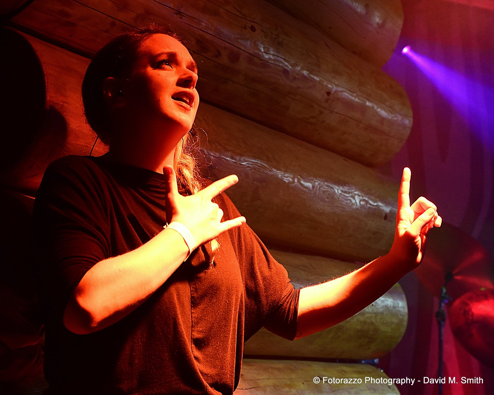
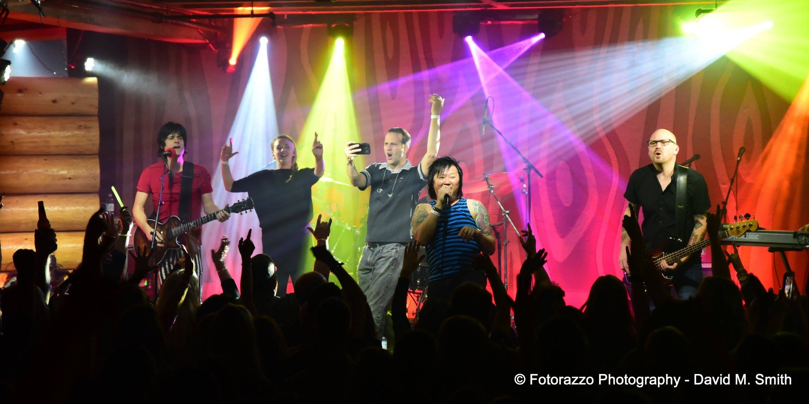
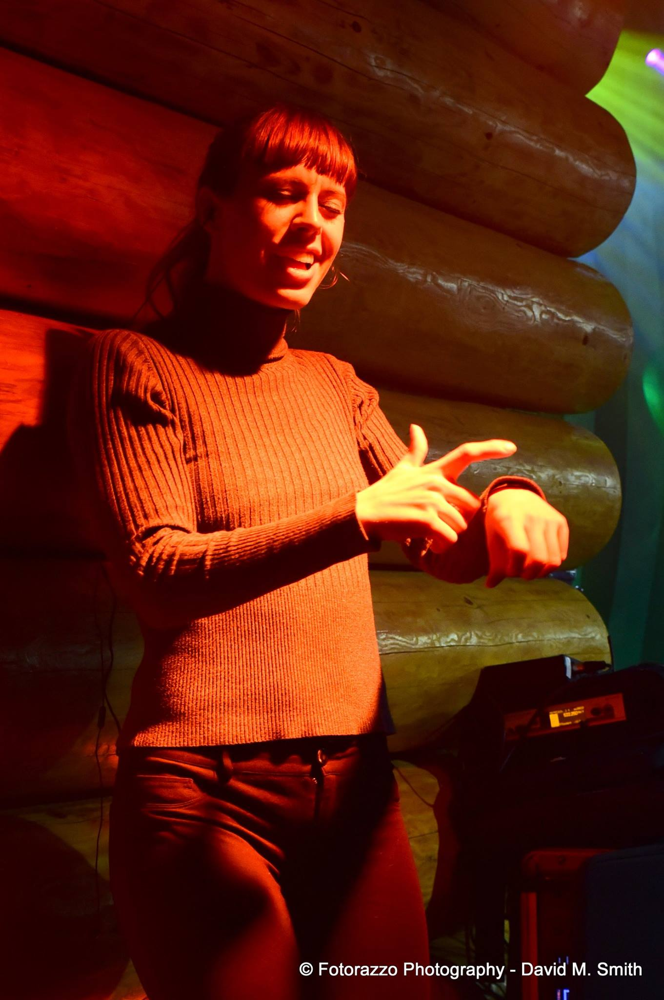

Kimberly Jack and Michelle Crane are two Deaf Portlanders who share a love of the diverse music and concert scene in Portland, Oregon. They planned to see a concert in October 2016 with their friend Helen Ebey, so Michelle asked the manager at Doug Fir Lounge to provide a sign language interpreter. To their dismay, Doug Fir Lounge told Michelle’s group that they couldn’t afford interpreters and that having them would be “distracting” for concert-goers. Many venues and bands are not aware of the need to provide equal access to music. They don’t know about resources to interpreting services, or stipulations related to the Americans with Disabilities Act (ADA) that may apply to them. The promoter for the band “Stone In Love” also declined the request for an interpreter.Jack and Crane went on FaceBook and Twitter to protest the decision to deny them service. They also contacted Myles de Bastion at CymaSpace, an up-and-coming non-profit that aims to improve accessibility to the arts for patrons who are deaf or hard of hearing. In addition to creating cutting-edge sound-reactive displays, CymaSpace has identified the need to advocate for the deaf and hard of hearing community by educating performance venues about the ADA so they can provide equal access to their concerts.
de Bastion consulted with the Oregon Association of the Deaf, a leading northwest Deaf advocacy group, for guidance. He contacted the Doug Fir Lounge organizer and explained about the needs of Deaf and hard of hearing patrons. The band and the staff then understood about the ADA as well as the benefits of supporting all types of concertgoers. In a move to provide equal access to all their fans, the concert promoter hired two local interpreters, Amanda Hays and Jamie Antonick, on de Bastion’s recommendation.
Even though the interpreters had only a week to prepare for this sold-out Stone in Love “Journey” performance, they successfully were able to interpret and provide access for Jack, Crane and Ebey. Jack and Crane were pleased with the results and were grateful for de Bastion’s and CymaSpace’s intervention on their behalf. “Jason (the band promoter) met up with us before and after the concert which was very cool of him to do. He was excited to see just how much it added to their show,” Crane said.
The interpreter presence at the concert helped to spread awareness of American Sign Language and the deaf and hard of hearing community. Concert goers learned that even Deaf and hard of hearing people love music and want to be included in entertainment events.


Thanks are extended to J-Fell Productions, the Doug Fir Lounge, interpreters Amanda Hays and Jamie Antonick, Deaf Advocates Tammy Richards and Bethany DonGiovanni, and the Oregon Association for the Deaf for this successful outcome. As a result of the preceding events and positive feedback, the event coordinator has already reserved four interpreters for the next Stone in Love “Journey” concert, which will be held at the at the McMenamins Crystal Ballroom (1332 W. Burnside, Portland OR) on January 28th.
Credits:
Article Author: Anne Gray Liversidge
Photography: Fotorazzo Photography, David M. Smith